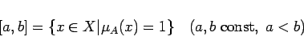

Inhalt Index DeskTop Bronstein

 Algebra und Diskrete Mathematik Fuzzy-Logik Grundlagen der Fuzzy-Logik Fuzzy-Mengen
Algebra und Diskrete Mathematik Fuzzy-Logik Grundlagen der Fuzzy-Logik Fuzzy-Mengen


Ist A eine Fuzzy-Menge über  so heißt
so heißt
|  | (5.363) |
Toleranz der Fuzzy-Menge  .
.
| Beispiel A |
|
In der Abbildung ist [a2,a3] die Toleranz.
|